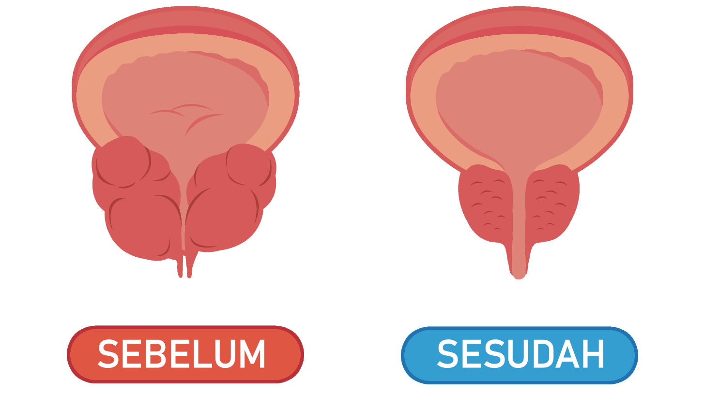

Dari sering buang air kecil hingga kanker prostat adalah satu langkah!
Diterbitkan | Pengarang: Prof. dr. Rainy Umbas kehidupan seksual saya menjadi luar biasa.prostatitis adalah penyakit mematikan, salah satu bahaya utamanya adalah perubahan menjadi tumor kanker prostat.
Bagaimana cara mengenali ancaman dalam waktu tepat? Wawancara dengan Kepala ahli urologi Indonesia.
APA SAJA GEJALA PERTAMA DARI PROSTATITIS:

Pada tahap awal, penyakit ini mungkin hampir tidak memanifestasikan dirinya, tetapi penurunan tingkat potensi dan masalah dengan buang air kecil adalah tanda pertama dari penyakit yang baru mulai. Yang paling penting adalah jangan menunda! Impotensi adalah hasil paling tidak berbahaya dari penyakit ini. Jauh lebih berbahaya adalah pembentukan tumor - prostate adenoma, yang paling sering menyebabkan kanker prostat. Selain itu, impotensi terjadi pada 100% kasus, yaitu setiap pria yang menderita prostatitis. Seseorang sebelumnya, seseorang kemudian, tetapi selalu. Kanker prostat terjadi pada tahap akhir prostatitis, tetapi juga tidak jarang. Orang-orang yang tidak mengobati prostatitis dan hidup dengan itu, pada kenyataannya, 'bermain api.' Jika Anda ingin hidup lama dan memiliki ereksi yang baik, prostatitis harus diobati. Dan Anda perlu melakukan ini sesegera mungkin. Masalahnya adalah kebanyakan pria yang sakit tidak pergi ke dokter untuk meminta bantuan. Sebagian dari mereka tidak menganggapnya berbahaya, sebagian - memalukan. Akibatnya, kami mendapatkan situasi di mana pasien mengabaikan penyakitnya. Dan jika mereka meminta bantuan, maka paling sering pada saat-saat ketika sudah terlambat dan tumor kanker mulai berkembang.
Anda perlu memahami bahwa prostatitis adalah penyakit mematikan, salah satu bahaya utamanya adalah perubahan menjadi tumor kanker prostat. Yang, pada gilirannya, paling sering menyebabkan kematian pasien. Penyakit yang dibiarkan tanpa kontrol dan perawatan, terkadang berkembang pesat, dan sudah dalam 1-2 tahun membawa ke kanker. Tetapi sekarang pria memiliki kesempatan unik untuk menyingkirkan penyakit ini untuk selamanya, dan tanpa kunjungan rutin ke klinik. Faktanya adalah bahwa pada tahun 2016 muncul obat revolusioner yang dengan cepat mengembalikan fungsi kelenjar prostat, menghilangkan peradangan, benar-benar menyembuhkan bahkan prostatitis kronis, dan juga secara ketara meningkatkan potensi dan durasi hubungan seksual. Obat ini bernama Betaprost. Ini adalah obat dalam negeri yang sangat terjangkau, meskipun para ilmuwan medis dari Jerman dan Prancis juga mengambil bagian dalam pengembangannya.
Pada tahun 2016 dalam lembaga Penelitian Ilmiah Urologi, yang merupakan pusat ilmiah Indonesia terkemuka di bidang urologi, secara berhasil menyelesaikan uji klinis obat generasi baru - Betaprost, dirancang untuk melawan prostatitis. Layanan pers institut mengumumkan hal berikut:
-
Efektivitas Betaprost, dihitung berdasarkan metode standar
(jumlah pasien yang pulih dengan jumlah total pasien dalam
kelompok 100 orang yang menjalani pengobatan) adalah 98%.
-
Tidak adanya penyakit setelah penghentian obat (menurut
hasil pengamatan selama 6 bulan) berjumlah 99%.
-
Setelah penggunaan mingguan, semua pasien mencatat
peningkatan yang ketara dalam libido & potensi.
-
Obat ini menggalakkan pada peningkatan durasi hubungan
seksual pada 95% dari subyek.
-
Efek samping yang tidak diinginkan, termasuk reaksi alergi,
tidak terdeteksi.
-
Obat revolusioner Betaprost diakui sebagai alat utama dalam
perang melawan prostatitis.
Penggunaan Betaprost di Indonesia.
Prof. dr. Rainy Umbas Kepala klinik dan departemen urologi Universitas Kedokteran Negara Indonesia, deputi direktur Lembaga Penelitian Uronefrologi dan Kesehatan Reproduksi Manusia, Anggota sejalan dengan Akademi Ilmu Pengetahuan Indonesia,Profesor, ahli urologi terkenal. Pengalaman kerja lebih dari 45 tahun
Hingga 2016, negara ini tidak memiliki obat yang efektif dan, yang paling penting, terjangkau untuk mengobati prostatitis. Dan ini menyebabkan konsekuensi yang luar biasa - tingkat penyakitnya adalah 45% dari populasi orang dewasa dan, yang terburuk, 30% di antara pria muda. Betaprost. - adalah revolusi dalam pengobatan prostatitis, obat mujarab nyata. Efektivitas tetes telah terbukti dalam amalan di Indonesia, dan sudah lama di Eropa. Komposisi unik dan sel-sel hidup yang ditemukan oleh para ilmuwan membuat Betaprost sangat diperlukan tarhadap prostatitis. Obat ini telah diuji secara klinis. Hasilnya benar-benar mengejutkan para ahli urologi. Sekitar 98% dari semua pasien sembuh tanpa kambuh. Semua yang lain benar-benar melewati gejala dan menghentikan proses jangkitan di prostat. Namun demikian, di antara 2% pasien yang tersisa, kekambuhan tertentu dapat terjadi, yang, bagaimanapun, menghilang dengan penggunaan lebih lanjut dari Betaprost.
Juga, karena kombinasi komponen unik Betaprost, ada beberapa peningkatan yang jelas dalam potensi dan durasi hubungan seksual.
Betaprost. baik karena memecahkan masalah secara keseluruhan. Ia memiliki efek penyembuhan yang hebat pada seluruh sistem urogenital pria. Sederhananya, setelah menggunakan obat, tubuh laki-laki mulai berfungsi seperti pada usia 25 tahun. Itulah sebabnya saya merekomendasikan obat tersebut kepada semua pria. Bahkan jika tidak ada prostatitis, obat akan melakukan pencegahan yang efektif dan secara signifikan meningkatkan potensi. Selain Indonesia, obat telah lulus sertifikasi di Eropa di Universitas urologi di Paris. Uji klinis telah sepenuhnya mengkonfirmasikan data Indonesia. Prancis bahkan mendapat persentase pemulihan yang lebih tinggi.
Pada saat ini Betaprost hanya tersedia untuk memesan di situs proyek. Kami mencoba berkali-kali untuk masuk rantai farmasi, tetapi mereka ingin menetapkan harga setinggi mungkin untuk obat tersebut dan menjualnya beberapa kali lebih mahal daripada yang kita inginkan. Apakah Anda faham, Institut urologi, seperti seluruh Kementerian Kesehatan, adalah organisasi nirlaba. Dan kami tidak memiliki tujuan untuk menghasilkan uang. Kami hanya ingin memberikan alat ini kepada seluruh rakyat. Oleh karena itu, kami menjualnya dengan kerugian, dengan pampasan perbedaan karena ekspornya. Dan tujuan utama bagi rantai farmasi adalah untuk mendapatkan uang. Karenanya, kami memiliki pendekatan penetapan harga yang sangat berbeda.
Pengiriman barang dilakukan dengan cepat & aman.
Harga lama: Rp 490.000
Harga promo: Rp 175.000
Pesan Betaprost!
-
 −Hendrikus15.06.2019Jika kalian ingin mengetahui efeknya, silahkan mencoba sendiri. Saya sudah pernah mencobanya dan hasilnya, luar biasa.
−Hendrikus15.06.2019Jika kalian ingin mengetahui efeknya, silahkan mencoba sendiri. Saya sudah pernah mencobanya dan hasilnya, luar biasa. -
 −Bryan15.06.2019Saya baru saja memesannya, dan mencobanya pada pagi harinya, ini bekerja seperti yang dijanjikan, tapi sayangnya istri saya sudah pergi bekerja, jadi Saya harus menonton film porno karenanya :)
−Bryan15.06.2019Saya baru saja memesannya, dan mencobanya pada pagi harinya, ini bekerja seperti yang dijanjikan, tapi sayangnya istri saya sudah pergi bekerja, jadi Saya harus menonton film porno karenanya :) -
−levilia14.06.2019Saya tadinya merasa cemburu dengan Anda, sudah 3 tahun ini suami saya juga memiliki masalah seperti ini,suami saya juga sudah mencoba semuanya. Dia hampir melakukan operasi. Akhirnya suami saya memutuskan untuk mencoba ini juga dan ternyata Betaprost sangat aman dan mudah digunakan. Sekarang bahkan saya tidak ingin meninggalkan rumah. karena dia sangat luar biasa diranjang
-
 −Handi13.06.2019Inilah yang terjadi setelah saya 15 menit mengkonsumsi Betaprost, seks saya menjadi lebih panjang dan nikmat! Terima kasih banyak, hubungan seksual saya menjadi luar biasa
−Handi13.06.2019Inilah yang terjadi setelah saya 15 menit mengkonsumsi Betaprost, seks saya menjadi lebih panjang dan nikmat! Terima kasih banyak, hubungan seksual saya menjadi luar biasa -
 −Aisya11.06.2019Setelah suami saya membaca web ini, dia langsung memesan Betaprost , sekarang seks menajdi lebih lama. Dalam satu malam kami bisa menyelesaikan 3-4 ronde
−Aisya11.06.2019Setelah suami saya membaca web ini, dia langsung memesan Betaprost , sekarang seks menajdi lebih lama. Dalam satu malam kami bisa menyelesaikan 3-4 ronde